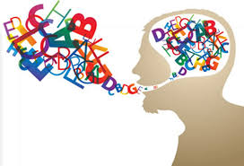
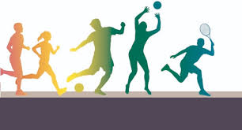
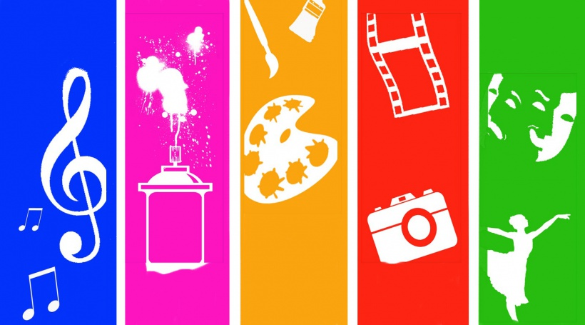

Língua Portuguesa, Literatura e Língua Estrangeira:
Aprofundamento de conhecimentos estruturantes para aplicação de diferentes linguagens em contextos sociais e de trabalho, além de compreender as línguas como fenômeno (geo)político, histórico, cultural, social, variável, heterogêneo e sensível aos contextos de uso.
Mais

Educação Física
No Ensino Médio, além da experimentação de novos jogos e brincadeiras, esportes, danças,
lutas, ginásticas e práticas corporais de aventura, os estudantes devem ser desafiados a refletir
sobre essas práticas, aprofundando seus conhecimentos sobre as potencialidades e os limites
do corpo, a importância de se assumir um estilo de vida ativo, e os componentes do movimento
relacionados à manutenção da saúde.
Mais

Artes
Compreensão das mais diversas produções artísticas e culturais, considerando suas características locais, regionais e globais, além de mobilizar seus conhecimentos sobre as linguagens artísticas para dar significado e (re) construir produções autorais individuais e coletivas.
Mais